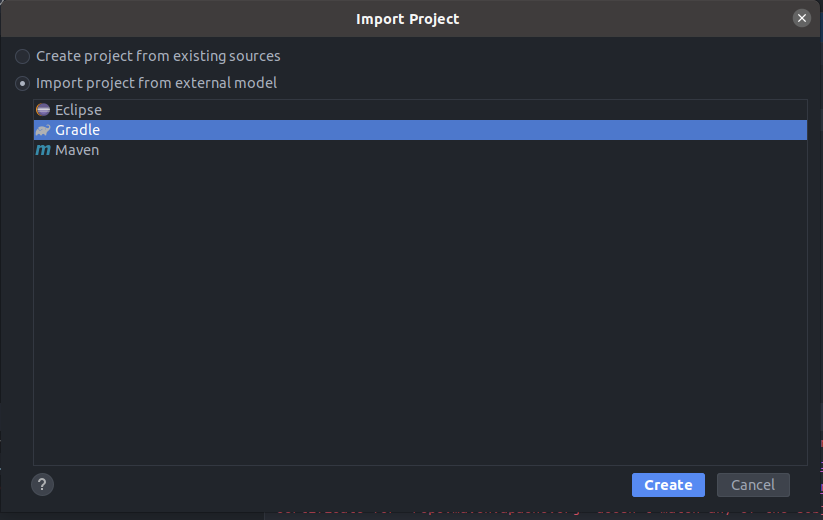
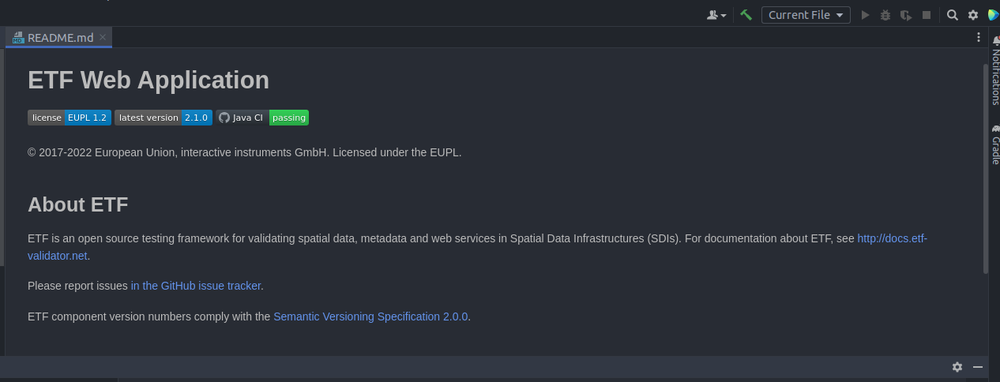
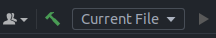
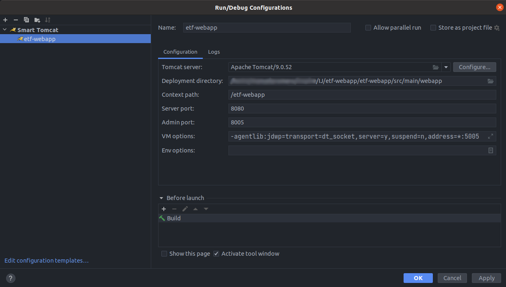
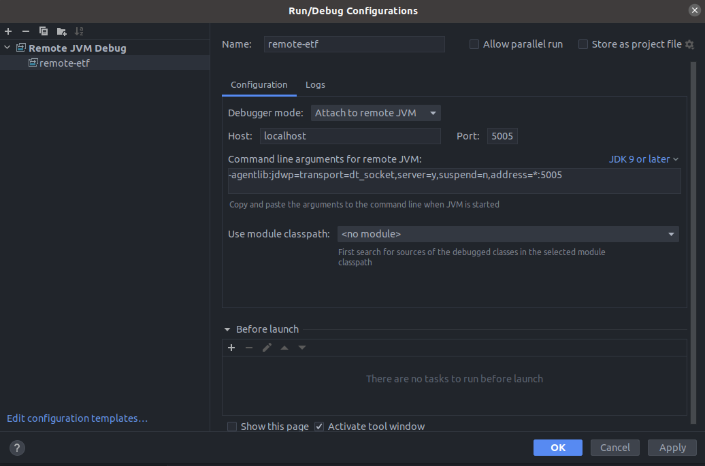

|
ETF |
Debugging ETF
Status |
approved |
Date |
2023-02-01 |
Description |
This manual describes how to remotely debug the components of ETF |
Target audience |
Developers planning to debug the ETF validator themselves |
Licence |
|
Identifier |
https://docs.etf-validator.net/v2.0/Developer_manuals/Building.html |
Language |
EN |
Changelog
| Date | Editor | Comments |
|---|---|---|
2023-02-01 |
Guadaltel |
document created |
About ETF
ETF is an open source testing framework for validating spatial data, metadata and web services in Spatial Data Infrastructures (SDIs). It can be used via a responsive web application or via a REST API.
The design of ETF is driven by three goals: be user-friendly, consistent with the standards and capable of testing all resources in an SDI.
interactive instruments has developed ETF and is the primary maintainer of the software.
Prerequisites
-
IntelliJ installed
-
Smart Tomcat plugin installed in IntelliJ
Cloning the source code
Clone the Source code from the GitHub repository.
git clone -b next https://github.com/etf-validator/etf-webapp.git| The next branch contains the latests developments. |
Using IntelliJ to run the etf-webapp
First, we have to open Intellij. Once there, we have to follow these instructions to create a project with etf-webapp:
Open the tab file → select new.. → open project from existing sources → select the etf-webapp project
Once selected it will appear a new window in which you have to select import project from external model and gradle and continue

At this moment you should be seeing the readme. Now we will make the run configuration file.

First, open the dropdown menu in which appear by default "Current File", and select "Edit Configurations…"

When the new window appear click in add new and select Smart tomcat once there fill it like in the next example

| Vm options: -agentlib:jdwp=transport=dt_socket,server=y,suspend=n,address=*:5005 |
Now we have to select the jdk for our project. For thet we have to follow these instructions:
Open the tab file → select Project structure → SDK option will appear as no SDK → select the SDK version 11
| If you want to test it you can run it with this configuration and it should work localhost:8080/etf-webapp |
Debugging using IntelliJ
To debug the test drivers, first they have to be cloned from the following links:
Test drivers then should be put in a IntelliJ project (It must be a different one than the one running etf-webapp) so we have to follow similar instructions than with etf-webapp:
Open the tab file → select new.. → open project from existing sources → select the testdriver project (Select only one of them)
And once is created we have to create a new run configuration file. This time we have to create one selecting remote jvm debug and filled it like in the followin example:

| In Command line arguments for remote JVM, you have to put the same as in vm options of the webapp |
Now we have to select the jdk for our project. For thet we have to follow the same instructions as in the etf-webapp module:
Open the tab file → select Project structure → SDK option will appear as no SDK → select the SDK version 1.8
| You can use 1.8 or 11, it depends on the modules you want to debug. In IntelliJ, it is also possible to use different SDKs in different modules, in case you need it. |
Adding the ETS repository and testdrivers
First you have to download the ETS repository from one release and extract it.
Then you have to run the etf-webapp once because it will create a folder called ".etf". Inside of it, you will find some folders, and in the projects folder you will have to copy the extracted files from the already extracted ETS repository.
Next, you have to put the testdrivers in td/lib/ to make them work and to have the collection of Executable Test Suites when you run the ETF-Webapp.
Now, when you run again the etf-webapp you will find all the ETS to start testing.
How to use
First, we have to have both projects opened in different windows, run the webapp, debug in the other window and it should work.
| If you want to debug another test driver or anything contained you just need to add a new module with the contents of the project you want to debug. |